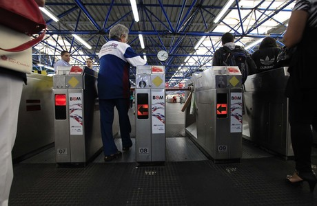

Cartão BOM vai integrar Ônibus metropolitanos com metrô e trem.
O cartão BOM (Bilhete do ôibus Metropolitano) que vai integrar ônibus metropolitanos com 22 estaçãoes do Metrô e da CPTM (Companhia Paulista de Trens Metropolitanos) passa a valer a partir desta segunda-feira (17).Nesta etapa, serão beneficiados cerca de 100 mil usuᲩos. Quando as 153 estaçãoes do sistema (89 da CPTM e 64 do Metrô) oferecerem este beneficio, cerca de 500 mil usuᲩos do sistema metropolitano de ônibus serão beneficiados.A partir desta segunda-feira, o bilhete vai integrar cinco estacãoes do metrô e cinco da CPTM. A partir de sᢡdo (22), mais sete estaçãoes da CPTM contarão com essa facilidade e no dia 27 de dezembro, mais duas estaçãoes do metrô e trem da CPTM vão fazer parte do sistema.
As 22 estaçãoes foram selecionadas por apresentarem maior volume de usuarios nas integracão entre EMTU, Metrô e CPTM, além de melhores condiçãoes estruturais para instalações dos equipamentos.
O cartão BOM da EMTU/SP já utilizado em mais de 600 linhas de �nibus intermunicipais da região metropolitana de São Paulo.
Nas 22 estaçãoes anunciadas nesta segunda-feira, serão integrados fisicamente o Cartão BOM Comum, o BOM Empresarial e o Vale-Transporte, ficando de fora o BOM Escolar, BOM Sꮩor e BOM Especial.
O projeto-piloto da integração fica do Cartão BOM foi lançado na estação Palmeiras/Barra Funda do Metr� e CPTM pelo Governador Geraldo Alckmin. Essa era uma reivindicação antiga dos usuᲩos quanto únificação da forma de pagamento nos ônibus metropolitanos, Metrô e trens da CPTM.
A recarga dos cartões Bom Vale Transporte e Bom Empresarial pode ser feita nas catracas dos ônibus metropolitanos e também nas 60 lojas e postos de atendimento distribuidos na região metropolitana de São Paulo. O Bom comum pode ser recarregado nas lojas e postos de atendimento. A relação completa pode ser consultada no site do Cartão BOM.
O sistema Leitores de cartões instalados nas estaçõess da CPTM e do Metrõ foram substituidss por equipamentos dotados de uma nova tecnologia que permite a leitura dos dados do cartão BOM e do Bilhete único, liberando então a catraca. Os valores pagos pelos usuarios não foram alterados.
Atualmente, são aceitos o Bilhete único (que integra o sistema municipal de linhas de ônibus com o sistema metroferroviário) e o bilhete magnético na rede da CPTM, Metrõ e ViaQuatro (concessionária da Linha 4 Amarela de metrõ).
O BOM ultilizado nos cinco mil veículos do sistema metropolitano de õnibus que interligam 39 municípos da Grande São Paulo. Nas linhas municipais de õnibus da cidade de São Paulo, o pagamento é feito por meio do Bilhete único. As cidades de Cotia, Taboã da Serra, Carapicuíba, Mairiporã, Ferraz de Vasconcelos, Por Rio Grande da Serra e São Caetano do Sul aceitam também o cartão BOM. E outros municípos da região metropolitana tem seu próprio cartão de pagamento de tarifa.